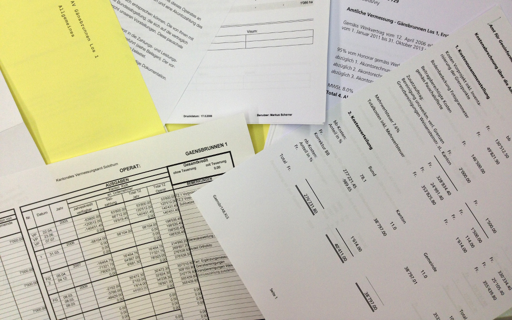
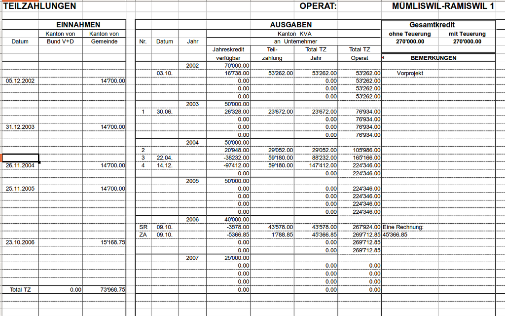

QGIS server vs. QGIS server
Stefan Ziegler—Amt für Geoinformation Kanton Solothurn
AV-Geschäftskontrolle
Stefan Ziegler—Amt für Geoinformation Kanton Solothurn

Motivation
Bernardo: «Wie viel Geld braucht ihr nächstens Jahr?»
Stefan: «Äh...»
Andrea: «Hat Geometer X den Auftrag Y erledigt?»
Stefan: «Äh...»
Konto - «Radav»

Konto - «Nachführung»
Umsetzung
pgModeler
QGIS
iReport Designer
JasperReports Server
Fork me on Github